Dash 是一个基于 Python 的开源框架，用于快速构建数据驱动的 Web 应用程序。
Dash 的核心优势在于它的易用性和灵活性，使得即使是没有前端开发经验的开发人员也能轻松上手。
Dash 允许用户通过简单的 Python 代码创建交互式的数据可视化应用，而无需掌握复杂的前端技术（如 JavaScript、HTML、CSS）。
Dash 是一个强大的工具，适合那些希望快速构建数据驱动型 Web 应用的开发者。
Dash 特别适合数据科学家、分析师和工程师,可以用几行代码创建一个功能强大的 Web 应用，展示数据分析结果、机器学习模型预测或其他数据驱动的功能。
Dash 的核心目标是让用户能够专注于数据和逻辑，而不是前端开发。
通过 Dash，你可以用几行代码创建一个功能强大的 Web 应用，展示数据分析结果、机器学习模型预测或其他数据驱动的功能。
Dash 可以将复杂的数据分析和可视化任务转化为交互式的 Web 应用，从而更有效地展示和分享工作成果。
本教程适合有 Python 基础的开发者学习，如果不了解 Python 可以查阅 Python 3.x 基础教程。
以下是一个基本 Dash 示例：
这个简单的应用包含一个输入框和一个显示区域。当用户在输入框中输入内容时，显示区域会实时更新显示用户输入的内容。
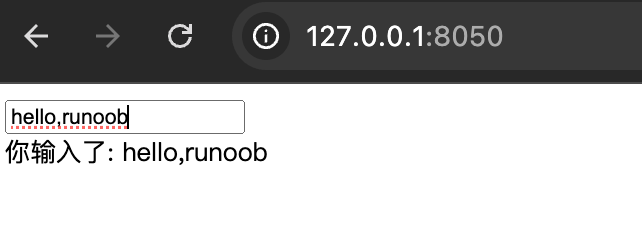
Github 开源地址：https://github.com/plotly/dash
Dash 官方文档：https://dash.plotly.com/
Dash 是一个基于 Python 的开源框架，专门用于构建数据分析和数据可视化的 Web 应用程序。
Dash 由 Plotly 团队开发，旨在帮助数据分析师、数据科学家和开发人员快速创建交互式的、基于数据的 Web 应用，而无需深入掌握前端技术（如 HTML、CSS 和 JavaScript）。
Dash 的核心优势在于其简单易用性和强大的功能。通过 Dash，用户可以使用纯 Python 代码来构建复杂的 Web 应用，而无需编写繁琐的前端代码。Dash 应用通常由两个主要部分组成：布局和交互性。
Dash 是它结合了 Flask 的后端能力、Plotly.js 的可视化能力以及 React.js 的交互能力，为用户提供了一个简单而强大的开发平台。
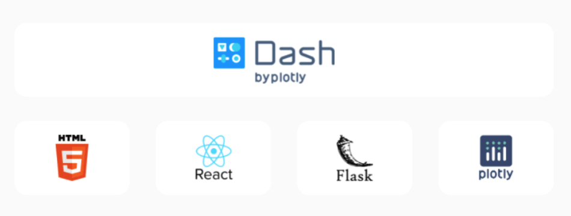
简单易用
只需 Python 代码即可构建 Web 应用，无需前端开发经验。
语法直观，学习曲线平缓。
高度可定制
支持自定义布局和样式。
可以通过 React.js 创建自定义组件。
交互性强
内置回调机制，轻松实现用户交互。
支持动态更新数据和图表。
与数据科学工具无缝集成
与 Pandas、NumPy、Scikit-learn 等数据科学库完美结合。
使用 Plotly 创建丰富的可视化图表。
跨平台
可以在本地运行，也可以部署到服务器或云平台。
Dash 并不是一个完全独立的框架，而是基于以下技术构建的：
Flask
Dash 的后端基于 Flask，一个轻量级的 Python Web 框架。
Flask 负责处理 HTTP 请求和响应。
Plotly.js
Dash 使用 Plotly.js 来渲染交互式图表。
Plotly.js 支持多种图表类型，如折线图、柱状图、散点图、热力图等。
React.js
Dash 的前端组件基于 React.js，一个流行的 JavaScript 库。
React.js 使得 Dash 的组件可以动态更新，而无需刷新页面。
其他依赖
Dash 还依赖于其他 Python 库，如 Pandas（数据处理）、NumPy（数值计算）等。
布局定义了应用程序的外观和结构。在 Dash 中，布局是通过 Python 代码来描述的，使用 dash_html_components 和 dash_core_components 这两个库来创建 HTML 元素和交互式组件。
dash_html_components：这个库提供了与 HTML 标签对应的 Python 类。例如，html.Div 对应 HTML 中的 <div> 标签，html.H1 对应 <h1> 标签等。通过这些组件，你可以轻松地构建页面的结构。
dash_core_components：这个库提供了更高级的交互式组件，如滑块、下拉菜单、图形等。例如，dcc.Graph 用于显示 Plotly 图表，dcc.Dropdown 用于创建下拉菜单。
从 Dash 2.0 版本开始，dash_html_components 和 dash_core_components 已经被整合到 dash 主包中。
现在推荐直接从 dash 中导入 html 和 dcc，而不是使用旧的 dash_html_components 和 dash_core_components。
以下是更新后的 Dash 核心组件导入方式和使用方法：
from dash import Dash, html, dcc
html：替代原来的 dash_html_components，用于创建 HTML 元素。
dcc：替代原来的 dash_core_components，用于创建交互式组件。
Dash 的交互性是通过回调函数（Callback）来实现的。回调函数允许你在用户与应用程序交互时动态更新页面内容。例如，当用户选择一个下拉菜单选项时，图表可以自动更新以显示相应的数据。
回调函数是 Dash 应用的核心机制之一。它通过 @app.callback 装饰器来定义，并指定输入（Input）和输出（Output）。输入通常是用户交互的组件（如滑块、下拉菜单等），而输出则是需要更新的组件（如图表、文本等）。
快速开发：用 Python 代码即可构建 Web 应用，开发效率高。
交互性强：支持动态更新和用户交互。
社区支持：有活跃的社区和丰富的文档。
可扩展性：支持自定义组件和高级功能。
性能瓶颈：对于非常复杂的应用，可能会遇到性能问题。
前端定制有限：虽然支持自定义组件，但复杂的前端逻辑仍需 JavaScript。
学习曲线：虽然简单易用，但掌握高级功能仍需一定时间。
| 工具 | 优点 | 缺点 | 适用场景 |
|---|---|---|---|
| Dash | 简单易用，适合 Python 开发者 | 前端定制有限，性能可能受限 | 数据可视化、内部工具 |
| Streamlit | 极简 API，适合快速原型开发 | 功能相对简单，不适合复杂应用 | 快速原型、简单仪表盘 |
| Flask | 高度灵活，适合全栈开发 | 需要前端开发经验，开发效率较低 | 全栈 Web 应用 |
| Shiny (R) | 适合 R 语言开发者，交互性强 | 仅限于 R 语言，生态系统较小 | R 语言用户的数据可视化 |
Dash 是一个基于 Python 的开源框架，用于构建交互式的 Web 应用程序，适合用于数据分析和可视化，因为它允许开发者通过简单的 Python 代码创建复杂的用户界面。
Dash 的核心组件包括 dash、dash-core-components、dash-html-components 和 dash-bootstrap-components，这些组件共同构成了一个强大的工具集，帮助开发者快速构建数据驱动的 Web 应用。
Dash 是一个基于 Python 的框架，因此安装过程非常简单，主要通过 pip 完成。
在安装 Dash 之前，你需要确保你的系统已经安装了 Python，Dash 支持 Python 3.6 及以上版本。如果你还没有安装 Python，可以从 Python 官方网站 下载并安装适合你操作系统的版本。
页可以参阅我们的 Python 教程。
安装 Dash 非常简单，可以通过 Python 的包管理工具 pip 来完成。
pip 是 Python 的包管理工具，用于安装 Dash 及其依赖库。
确保已安装 pip，可以通过以下命令检查：
pip --version
注意：Python 2.7.9 + 或 Python 3.4+ 以上版本都自带 pip 工具。
如果没有安装可以参考：Python pip 安装与使用。
打开终端或命令行工具，运行以下命令：
pip install dash 或 pip3 install dash
这条命令会安装 Dash 的核心库及其依赖项，包括：
dash：Dash 的核心库。
dash-core-components：Dash 的核心组件库（如输入框、下拉菜单、图表等）。
dash-html-components：Dash 的 HTML 组件库（如 div、h1、p 等）。
dash-table：用于显示和操作表格数据的组件。
除了核心库外，Dash 还支持一些可选依赖库，用于增强功能。
以下是常用的可选库及其安装方法：
1、Plotly
Plotly 是 Dash 默认的图表渲染库。如果你需要使用 Plotly 创建图表，可以单独安装：
pip install plotly
2、Pandas
Pandas 是一个强大的数据处理库，常用于与 Dash 结合使用。安装命令：
pip install pandas
3、JupyterDash
如果你希望在 Jupyter Notebook 中使用 Dash，可以安装 jupyter-dash：
pip install jupyter-dash
4、Dash Bootstrap Components
Dash Bootstrap Components 提供了 Bootstrap 风格的组件，用于快速构建美观的布局。安装命令：
pip install dash-bootstrap-components
安装完成后，你可以通过以下命令来验证 Dash 是否安装成功：
如果安装成功，你将看到 Dash 的版本号输出，例如：
3.2.0
此外，还可以使用以下命令查看 Dash 的详细安装信息：
python -m pip show dash
该命令会显示 Dash 的版本号、安装位置及依赖信息。
注意： Dash 3.0 及以上版本已将 app.run_server() 替换为 app.run()，使用新版 Dash 时应采用新的启动方式。
在上一章节我们已经介绍了如何安装 Dash，为了确保 Dash 安装正确，我们可以创建一个简单的 Dash 应用来测试。
在你的项目目录中创建一个新的 Python 文件，例如 app.py。
在 app.py 文件中，输入以下代码：
在终端中运行以下命令来启动 Dash 应用：
python app.py
如果一切正常，你将看到类似以下的输出：
Dash is running on http://127.0.0.1:8050/ * Serving Flask app 'test' * Debug mode: on
打开浏览器并访问 http://127.0.0.1:8050/，你将看到一个简单的 Dash 应用页面，显示标题、文本和一个柱状图，如下所示
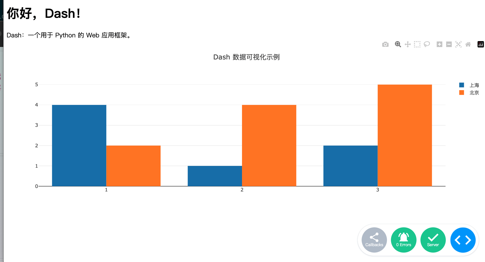
通过以上步骤，我们已经成功运行了一个简单的 Dash 应用。
Dash 是一个功能强大且易于使用的框架，特别适合用于数据可视化和交互式 Web 应用的开发。
Dash 的核心组件是构建应用程序的基础，它们允许你创建用户界面并与数据进行交互。
Dash 通过 dash.html 和 dash.dcc 模块，你可以轻松地创建用户界面并与数据进行交互。
从 Dash 2.0 版本开始，dash_html_components 和 dash_core_components 已经被整合到 dash 主包中。
现在推荐直接从 dash 中导入 html 和 dcc，而不是使用旧的 dash_html_components 和 dash_core_components。
Dash 的核心组件可以分为两大类：dash.html 和 dash.dcc。dash.html 提供了 HTML 标签的 Python 封装，而 dash.dcc 则提供了更高级的交互式组件，如滑块、下拉菜单、图形等。
dash.html 组件dash.html 模块提供了与 HTML 标签对应的 Python 类。这些类允许你以 Python 的方式编写 HTML 代码。例如，dash.html.Div 对应 HTML 的 <div> 标签，dash.html.H1 对应 <h1> 标签。
dash.html 组件使得编写 HTML 结构变得非常简单和直观。
以上代码中，我们创建了一个包含标题、段落和两个 Span 元素的 Div 容器。
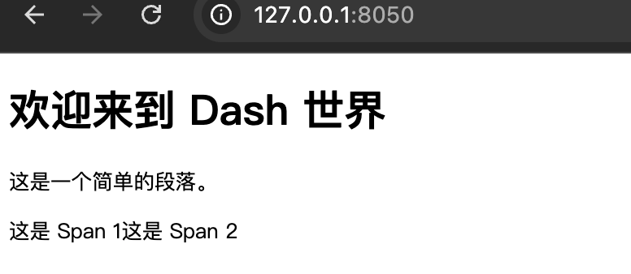
dash.dcc 组件dash.dcc 模块提供了更高级的交互式组件，这些组件通常用于数据可视化和用户输入。常见的 dash.dcc 组件包括 Graph、Dropdown、Slider 等。
在这个示例中，我们创建了一个包含柱状图和下拉菜单的布局。dcc.Graph 组件用于显示数据可视化图表，而 dcc.Dropdown 组件则允许用户从下拉菜单中选择选项。
每个 Dash 组件都有一些属性，这些属性用于控制组件的外观和行为。例如，dash.html.Div 的 children 属性用于指定其子元素，dash.dcc.Graph 的 figure 属性用于指定图表的数据和布局。
以上代码中，我们使用 style 属性来设置标题的颜色和字体大小，并使用 className 属性为段落指定了一个 CSS 类名。
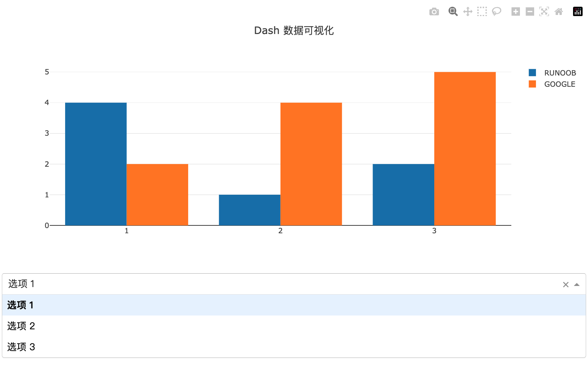
Dash 的核心组件之一是 HTML 组件，这些组件允许你在应用中嵌入标准的 HTML 元素。
本文将详细介绍 Dash 中常用的 HTML 组件。
在 Dash 的最新版本中，HTML 组件的引入方式有所变化，我们可以直接从 dash 模块中导入 html 组件，而不需要像以前那样从 dash_html_components 中导入。
from dash import html
| 组件 | 说明 | 示例代码 |
|---|---|---|
html.Div |
创建一个容器（<div>），用于包裹其他组件 |
html.Div(children=[html.H1("标题"), html.P("这是一个段落。")]) |
html.H1 |
创建一级标题（<h1>） |
html.H1("一级标题") |
html.H2 |
创建二级标题（<h2>） |
html.H2("二级标题") |
html.H3 |
创建三级标题（<h3>） |
html.H3("三级标题") |
html.P |
创建段落（<p>） |
html.P("这是一个段落。") |
html.Span |
创建行内容器（<span>），用于包裹行内文本或元素 |
html.Span("这是一段行内文本。") |
html.Br |
创建换行（<br>） |
html.Div(children=[html.P("第一行"), html.Br(), html.P("第二行")]) |
html.A |
创建超链接（<a>） |
html.A("点击这里访问 Dash 官网", href="https://dash.plotly.com") |
html.Img |
插入图片（<img>） |
html.Img(src="https://plotly.com/assets/images/logo.png", height="50px") |
html.Ul |
创建无序列表（<ul>） |
html.Ul(children=[html.Li("列表项1"), html.Li("列表项2")]) |
html.Ol |
创建有序列表（<ol>） |
html.Ol(children=[html.Li("第一项"), html.Li("第二项")]) |
html.Li |
创建列表项（<li>） |
html.Li("列表项") |
html.Button |
创建按钮（<button>） |
html.Button("点击我", id='my-button') |
html.Label |
创建标签（<label>），通常与输入组件一起使用 |
html.Label("用户名:"), dcc.Input(id='username', type='text') |
html.Table |
创建表格（<table>） |
html.Table(children=[html.Tr(children=[html.Th("姓名"), html.Th("年龄")])]) |
html.Tr |
创建表格行（<tr>） |
html.Tr(children=[html.Th("姓名"), html.Th("年龄")]) |
html.Th |
创建表头（<th>） |
html.Th("姓名") |
html.Td |
创建表格单元格（<td>） |
html.Td("张三") |
html.Header |
创建页眉（<header>） |
html.Header(children=[html.H1("页眉标题")]) |
html.Footer |
创建页脚（<footer>） |
html.Footer(children=[html.P("版权所有 © 2023")]) |
html.Section |
创建章节（<section>） |
html.Section(children=[html.H2("章节标题"), html.P("章节内容")]) |
html.Nav |
创建导航栏（<nav>） |
html.Nav(children=[html.A("首页", href="/"), html.A("关于", href="/about")]) |
html.Main |
创建主要内容区域（<main>） |
html.Main(children=[html.H1("主要内容")]) |
html.Article |
创建文章区域（<article>） |
html.Article(children=[html.H2("文章标题"), html.P("文章内容")]) |
html.Aside |
创建侧边栏（<aside>） |
html.Aside(children=[html.H2("侧边栏"), html.P("侧边栏内容")]) |
html.Details |
创建可折叠内容（<details>） |
html.Details(children=[html.Summary("点击展开"), html.P("隐藏内容")]) |
html.Summary |
创建可折叠内容的标题（<summary>） |
html.Summary("点击展开") |
html.Divhtml.Div 是 Dash 中最常用的 HTML 组件之一，它用于创建一个 div 元素。div 元素通常用于将内容分组，并且可以通过 CSS 进行样式设置。
在这个例子中，html.Div 包含了一个标题 (html.H1) 和一个段落 (html.P)。
html.H1 到 html.H6html.H1 到 html.H6 用于创建不同级别的标题。H1 是最高级别的标题，H6 是最低级别的标题。
html.Phtml.P 用于创建一个段落 (<p> 元素)。
html.Ahtml.A 用于创建一个超链接 (<a> 元素)。你可以通过 href 属性指定链接的目标 URL。
html.Imghtml.Img 用于在页面中插入图片 (<img> 元素)。你需要通过 src 属性指定图片的 URL。
html.Ul 和 html.Lihtml.Ul 用于创建一个无序列表 (<ul> 元素)，而 html.Li 用于创建列表项 (<li> 元素)。
html.Olhtml.Ol 用于创建一个有序列表 (<ol> 元素)。
html.Brhtml.Br 用于在页面中插入一个换行符 (<br> 元素)。
html.Hrhtml.Hr 用于在页面中插入一条水平线 (<hr> 元素)。
html.Spanhtml.Span 用于创建一个内联容器 (<span> 元素)，通常用于对文本的一部分进行样式设置。
Dash 的 HTML 组件支持通过 style 属性来设置 CSS 样式。style 属性接受一个字典，其中键是 CSS 属性，值是相应的 CSS 值。
这段代码使用 Dash 的 html.Div 组件创建了一个带有样式的 div 元素，效果是一个蓝色背景、白色文字、带圆角和内边距的 div。。
html.Div：创建一个 <div> 容器。
children：设置 div 的内容为 "这是一个带样式的 Div"。
style：通过 CSS 样式设置 div 的外观：
color: white：文字颜色为白色。
backgroundColor: blue：背景颜色为蓝色。
padding: 10px：内边距为 10 像素。
borderRadius: 5px：边框圆角为 5 像素。
以下是一个完整的 Dash 应用实例，展示了如何使用 html.Div 和其他 HTML 组件，并通过 style 属性设置样式。
效果如下：
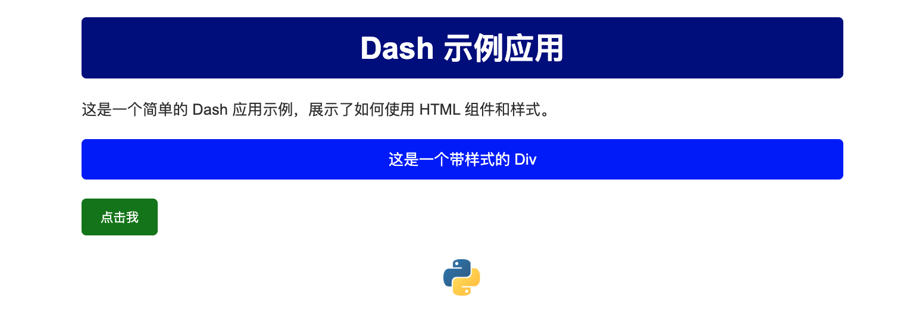
Dash 基于 Python，允许开发者使用纯 Python 代码构建交互式的 Web 应用。
Dash 的核心组件之一是 dash.dcc（Dash Core Components），它提供了丰富的 UI 组件，如滑块、下拉菜单、图形等，这些组件可以帮助开发者快速构建功能强大的 Web 应用。
dash.dcc 组件包括但不限于：
这些组件是构建交互式 Web 应用的基础，开发者可以通过组合这些组件来创建复杂的用户界面。
在最新版本的 Dash 中，推荐使用以下方式导入 dcc：
from dash import dcc
| 组件 | 说明 | 示例代码 |
|---|---|---|
dcc.Input |
创建一个文本输入框。 | dcc.Input(id='input', type='text', placeholder='请输入内容...') |
dcc.Dropdown |
创建一个下拉菜单。 | dcc.Dropdown(id='dropdown', options=[{'label': '选项1', 'value': '1'}], value='1') |
dcc.Slider |
创建一个滑块。 | dcc.Slider(id='slider', min=0, max=10, step=1, value=5) |
dcc.Graph |
创建一个交互式图表（基于 Plotly.js）。 | dcc.Graph(id='graph', figure={'data': [{'x': [1, 2, 3], 'y': [4, 1, 2], 'type': 'bar'}]}) |
dcc.Textarea |
创建一个多行文本输入框。 | dcc.Textarea(id='textarea', value='请输入多行文本...') |
dcc.Checklist |
创建一个复选框列表。 | dcc.Checklist(id='checklist', options=[{'label': '选项1', 'value': '1'}], value=['1']) |
dcc.RadioItems |
创建一个单选按钮组。 | dcc.RadioItems(id='radio', options=[{'label': '选项1', 'value': '1'}], value='1') |
dcc.DatePickerSingle |
创建一个日期选择器（单选）。 | dcc.DatePickerSingle(id='date-picker', date='2023-10-01') |
dcc.DatePickerRange |
创建一个日期范围选择器。 | dcc.DatePickerRange(id='date-range', start_date='2023-10-01', end_date='2023-10-07') |
dcc.Markdown |
渲染 Markdown 文本。 | dcc.Markdown('''# 标题\n- 列表项1''') |
dcc.Store |
在客户端存储数据，用于跨回调共享数据。 | dcc.Store(id='store', data={'key': 'value'}) |
dcc.Upload |
创建一个文件上传组件。 | dcc.Upload(id='upload', children=html.Div('拖放或点击上传文件')) |
dcc.Tabs |
创建选项卡组件。 | dcc.Tabs(id='tabs', children=[dcc.Tab(label='标签1', value='1')]) |
dcc.Tab |
创建单个选项卡（需与 dcc.Tabs 配合使用）。 |
dcc.Tab(label='标签1', value='1') |
dcc.Interval |
定时触发回调的组件。 | dcc.Interval(id='interval', interval=1000) |
dcc.Location |
用于管理 URL 的组件。 | dcc.Location(id='url', pathname='/') |
dcc.Link |
创建一个超链接，用于页面导航（需与 dcc.Location 配合使用）。 |
dcc.Link('跳转到首页', href='/') |
dcc.ConfirmDialog |
创建一个确认对话框。 | dcc.ConfirmDialog(id='confirm', message='确定要执行此操作吗？') |
dcc.ConfirmDialogProvider |
提供一个确认对话框（需与按钮等组件配合使用）。 | dcc.ConfirmDialogProvider(html.Button('删除'), id='confirm-provider') |
dcc.Loading |
创建一个加载动画组件。 | dcc.Loading(id='loading', children=[html.Div('加载中...')]) |
dcc.Download |
用于触发文件下载的组件。 | dcc.Download(id='download') |
以下是一个简单的 Dash 应用示例，展示了如何使用 dash.dcc 组件：
以上实例中，我们创建了一个简单的 Dash 应用，包含一个输入框和一个显示输入内容的区域。
当用户在输入框中输入内容时，应用会实时更新显示区域的内容。
dcc.Graph 绘制图表dcc.Graph 是 dash.dcc 中最常用的组件之一，用于绘制各种图表。
以下是一个使用 dcc.Graph 绘制折线图的示例：
以上实例中，我们使用 plotly.express 创建了一个简单的折线图，并通过 dcc.Graph 组件将其显示在应用中。
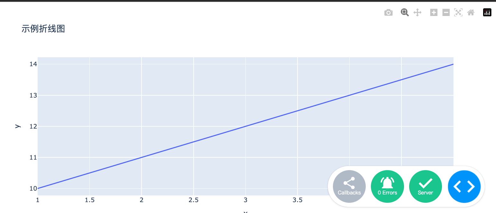
dcc.Dropdown 创建下拉菜单dcc.Dropdown 组件允许用户从多个选项中选择一个。
以下是一个使用 dcc.Dropdown 的示例：
以上实例中，我们创建了一个下拉菜单，当用户选择一个选项时，应用会显示用户选择的内容。
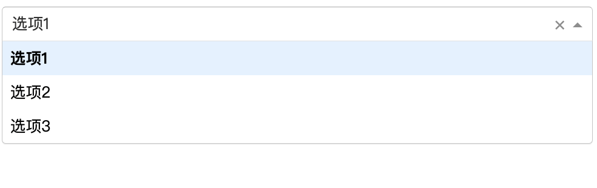
dash.dcc 组件的常见属性和回调dash.dcc 组件的属性非常丰富，每个组件都有其特定的属性。
以下是一些常见组件的属性：
dcc.Input：
id：组件的唯一标识符。type：输入类型，如 text、number 等。value：输入框的当前值。dcc.Dropdown：
id：组件的唯一标识符。options：下拉菜单的选项列表，每个选项是一个字典，包含 label 和 value。value：当前选中的值。dcc.Graph：
id：组件的唯一标识符。figure：要显示的图表对象，通常由 plotly.express 或 plotly.graph_objects 创建。dcc.Slider：
id：组件的唯一标识符。min：滑块的最小值。max：滑块的最大值。value：滑块的当前值。在 Dash 中，回调函数用于处理用户交互。回调函数通过 @app.callback 装饰器定义，并指定输入和输出组件。
以下是一个简单的回调函数示例：
以上实例中，回调函数 update_output 会在 input-component 的值发生变化时被调用，并将新的值传递给 output-component。
dash.dcc 组件在实际项目中有广泛的应用。以下是一个实际应用案例，展示了如何使用 dash.dcc 组件构建一个交互式数据可视化应用。
假设我们有一个数据集，包含不同城市的温度和湿度数据。我们可以使用 dash.dcc 组件构建一个交互式应用，允许用户选择城市并查看相应的温度和湿度图表。
以上实例中，用户可以通过下拉菜单选择城市，应用会根据用户的选择更新温度和湿度的柱状图。
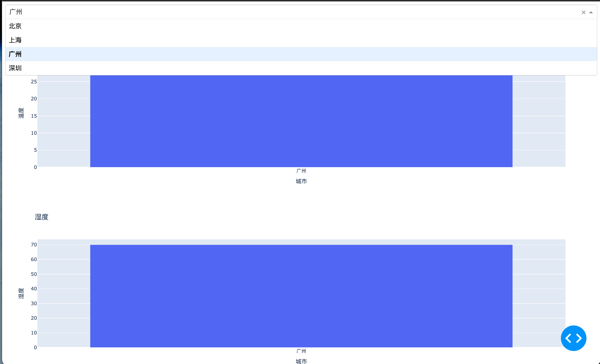
Dash 允许开发者使用Python来创建动态的、响应式的用户界面。
Dash 的核心功能之一就是回调函数（Callback），它使得用户界面能够根据用户的输入或操作实时更新。
回调函数是 Dash 中用于处理用户交互的核心机制，它允许你在用户与应用程序交互时，动态地更新应用程序的布局或数据。简单来说，回调函数是一个Python函数，它会在特定的输入发生变化时被触发，并根据这些输入的变化来更新输出。
一个典型的 Dash 回调函数包含以下几个部分：
@app.callback(
Output(component_id='output-component', component_property='output-property'),
Input(component_id='input-component', component_property='input-property')
)
def update_output(input_value):
# 根据输入值计算输出值
return output_value
Output：
指定回调函数的输出目标。
component_id：目标组件的 ID。
component_property：目标组件的属性（如 children、value 等）。
Input：
指定回调函数的输入来源。
component_id：输入组件的 ID。
component_property：输入组件的属性（如 value、n_clicks 等）。
回调函数：
接收输入值，计算并返回输出值。
函数名可以自定义（如 update_output）。
以下示例展示了如何根据输入框的值动态更新文本内容：
以下示例展示了如何根据下拉菜单的选择动态更新图表：
以上代码执行后，在下拉菜单中选择城市，图表会动态更新显示该城市的人口数据。
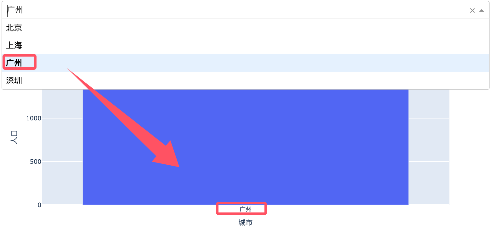
以下实例，用户输入数字后，显示该数字的平方：
代码说明：
1、布局部分：
使用 html.H1 创建一个标题"计算平方"。
使用 dcc.Input 创建一个数字输入框，id 为 number-input，类型为 number。
使用 html.Div 创建一个用于显示结果的区域，id 为 output。
2、回调函数：
使用 @app.callback 装饰器定义回调函数。
输入是 number-input 输入框的 value 属性。
输出是 output Div 的 children 属性。
在回调函数中：
检查输入是否为空。
将输入转换为浮点数并计算平方。
返回格式化后的结果。
3、运行应用：使用 app.run(debug=True) 启动应用，debug=True 表示开启调试模式，运行效果显示如下：
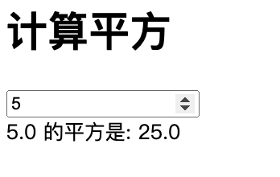
在 Dash 中，回调函数的输入和输出是通过 Input 和 Output 对象来指定的。Input 对象指定了哪些组件的哪些属性变化会触发回调函数，而 Output 对象指定了回调函数执行后，哪些组件的哪些属性会被更新。
当用户在界面上进行操作（例如输入文本、点击按钮等）时，相关的组件属性会发生变化。Dash 会检测到这些变化，并自动调用与之绑定的回调函数。
回调函数执行时，Dash会将输入属性的当前值作为参数传递给回调函数。回调函数根据这些输入值进行计算或处理，并返回输出属性的新值。Dash会自动将返回的值更新到指定的组件属性中。
一个回调函数可以有多个输入和输出。例如：
在这个例子中，回调函数update_outputs有两个输入和两个输出。当input-1或input-2的值发生变化时，回调函数会被触发，并更新两个输出组件的children属性。
有时候，你可能需要在回调函数中使用一些不会触发回调的数据。这时可以使用State对象。State对象与Input对象类似，但它不会触发回调函数。
在这个例子中，n_clicks是触发回调的输入，而input_value是回调函数中使用的状态。只有当按钮被点击时，回调函数才会被触发，但回调函数中可以使用输入框的当前值。
在某些情况下，回调函数可能会被频繁触发，导致性能问题。为了避免这种情况，可以使用dash.no_update来防止不必要的更新。
在这个例子中，如果输入框的值为空，回调函数将不会更新输出组件。
如果回调函数没有按预期触发，可能是以下原因之一：
Input和Output中的组件ID与布局中的ID一致。Input和Output中的属性名称正确。如果回调函数执行缓慢，可以考虑以下优化方法：
在数据科学和分析领域，数据可视化是一个至关重要的环节，通过可视化，我们可以更直观地理解数据，发现其中的模式和趋势。
Dash 的核心可视化功能依赖于 Plotly，这是一个强大的开源数据可视化库，Plotly 提供了丰富的图表类型和高度可定制的选项，能够轻松创建交互式图表。
Dash 通过 dcc.Graph 组件与 Plotly 无缝集成，用户可以直接在 Dash 应用中嵌入 Plotly 图表。
Plotly 是一个基于 JavaScript 的开源数据可视化库，支持多种编程语言，包括 Python、R、Julia 等。
Plotly 提供了丰富的图表类型，如折线图、柱状图、散点图、热力图等，并且支持交互功能，如缩放、平移、悬停提示等。
Plotly 特点：
丰富的图表类型：折线图、柱状图、散点图、饼图、热力图、3D 图等。
交互性：支持缩放、平移、悬停提示等交互功能。
高度可定制：可以自定义图表的颜色、布局、注释等。
与 Dash 无缝集成：通过 dcc.Graph 组件直接在 Dash 应用中嵌入 Plotly 图表。
在开始之前，我们需要安装 Dash 和 Plotly。可以通过以下命令进行安装：
pip install dash plotly 或 pip3 install dash plotly
dcc.Graph 是 Dash 中用于显示 Plotly 图表的组件。它的核心参数是 figure，用于指定图表的数据和布局。
figure 参数：
data：图表的数据部分，是一个字典列表，每个字典表示一个数据系列。
layout：图表的布局部分，用于设置标题、坐标轴、图例等。
显示效果如下：
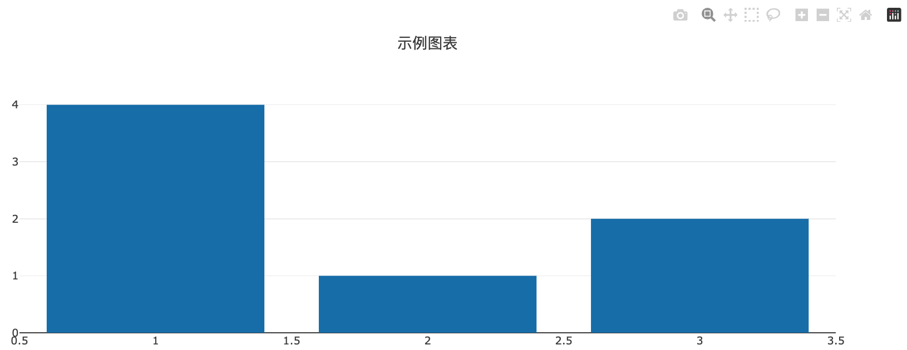
首先，我们创建一个简单的 Dash 应用，展示一个基本的 Plotly 图表。
代码解析:
pandas 创建了一个简单的数据集 df，包含水果、数量和城市信息。plotly.express 的 px.bar 函数创建了一个柱状图，展示了不同城市中各种水果的数量。html.Div 和 dcc.Graph 定义了应用的布局，其中 dcc.Graph 用于嵌入 Plotly 图表。app.run(debug=True) 启动应用，并开启调试模式。显示效果如下：
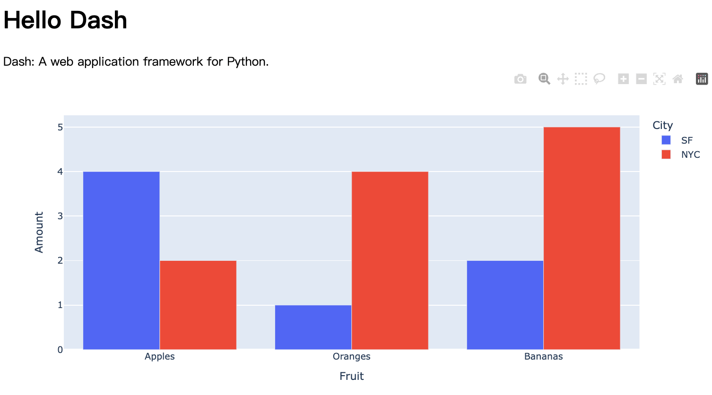
Dash 的强大之处在于其交互功能，我们可以通过 Dash 的回调机制，动态更新图表内容。
代码解析：
dcc.Dropdown 组件，用户可以选择不同的城市。@app.callback 装饰器定义了一个回调函数 update_graph，当用户选择不同的城市时，图表会动态更新。显示效果如下：
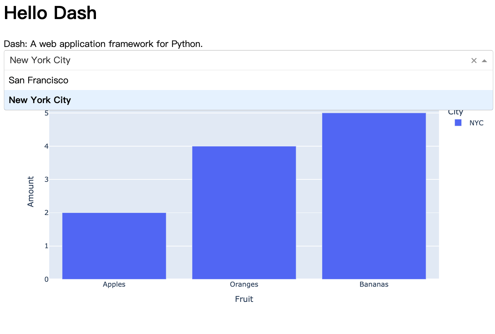
Plotly Express 是 Plotly 的高级接口，能够用极简的代码创建复杂的图表。它非常适合快速原型开发。
1、折线图 (px.line)：
import plotly.express as px df = px.data.iris() fig = px.line(df, x='sepal_width', y='sepal_length', title='折线图示例')
2、柱状图 (px.bar)：
fig = px.bar(df, x='species', y='sepal_length', title='柱状图示例')
3、散点图 (px.scatter)：
fig = px.scatter(df, x='sepal_width', y='sepal_length', color='species', title='散点图示例')
4、饼图 (px.pie)：
fig = px.pie(df, names='species', values='sepal_length', title='饼图示例')
5、热力图 (px.imshow)：
import numpy as np data = np.random.rand(10, 10) fig = px.imshow(data, title='热力图示例')
以下是一个完整的 Dash 应用示例，使用 Plotly Express 创建图表：
显示如下：
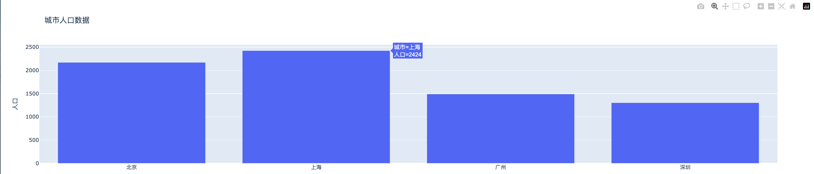
Plotly Graph Objects 是 Plotly 的低级接口，提供了更细粒度的控制，适合需要高度定制的场景。
1、折线图 (go.Scatter)：
import plotly.graph_objects as go fig = go.Figure(data=go.Scatter(x=[1, 2, 3], y=[4, 1, 2], mode='lines'))
2、柱状图 (go.Bar)：
fig = go.Figure(data=go.Bar(x=['A', 'B', 'C'], y=[10, 20, 30]))
3、散点图 (go.Scatter)：
fig = go.Figure(data=go.Scatter(x=[1, 2, 3], y=[4, 1, 2], mode='markers'))
4、饼图 (go.Pie)：
fig = go.Figure(data=go.Pie(labels=['A', 'B', 'C'], values=[10, 20, 30]))
以下是一个完整的 Dash 应用示例，使用 Plotly Graph Objects 创建图表：
显示如下：
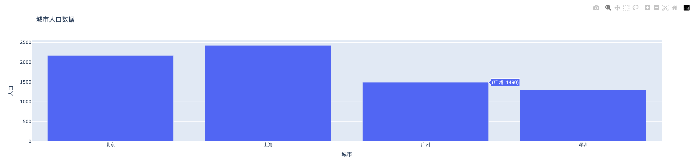
在现代数据可视化应用中，动态更新图表是一个非常重要的功能，它允许用户在不刷新整个页面的情况下，实时查看数据的变化。
在 Dash 中，动态更新图表的核心机制是 回调函数（Callback），回调函数允许你在用户与页面交互时（如点击按钮、选择下拉菜单等），动态地更新图表的内容。
一个典型的回调函数包含以下几个部分：
Dash 回调函数详解参见：https://www.runoob.com/dash/dash-callback.html。
通过回调函数，可以动态更新图表的数据和布局。
以下是一个完整的 Dash 应用示例，用户可以通过下拉菜单选择数据集，动态显示对应的折线图：
显示如下所示：
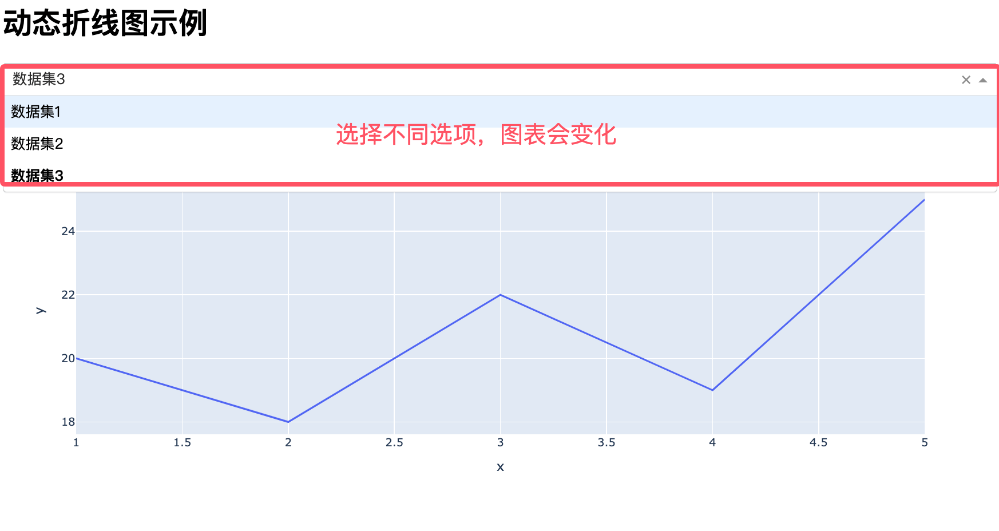
1、布局部分：
使用 html.H1 创建一个标题"计算平方"。
使用 dcc.Input 创建一个数字输入框，id 为 number-input，类型为 number。
使用 html.Div 创建一个用于显示结果的区域，id 为 output。
2、回调函数：
使用 @app.callback 装饰器定义回调函数。
输入是 number-input 输入框的 value 属性。
输出是 output Div 的 children 属性。
在回调函数中：
检查输入是否为空。
将输入转换为浮点数并计算平方。
返回格式化后的结果。
4、运行应用：
使用 app.run(debug=True) 启动应用，debug=True 表示开启调试模式。
在现代 Web 应用开发中，单页面应用（SPA）和多页面应用（MPA）是两种常见的架构模式。
单页面应用通常通过动态加载内容来提供流畅的用户体验，而多页面应用则通过多个独立的页面来组织内容。
在单页面应用中，所有的内容都在一个页面中动态加载和更新，用户通过点击链接或按钮来切换不同的视图。这种架构的优点是用户体验流畅，页面加载速度快，但缺点是随着应用规模的增大，代码结构可能会变得复杂。
多页面应用则通过多个独立的页面来组织内容，每个页面都有自己的 URL 和布局。这种架构的优点是代码结构清晰，易于维护，但缺点是页面切换时会有一定的加载延迟。
在 Dash 中实现多页面布局可以通过 dcc.Location 和 dcc.Link 组件来实现。
dcc.Location 用于跟踪当前页面的 URL，而 dcc.Link 用于在页面之间导航。通过结合回调函数，可以根据 URL 动态加载不同的页面内容。
使用 dcc.Location 和 dcc.Link 可以实现多页面布局。
通过回调函数根据 pathname 动态加载页面内容。
结合模块化布局和 URL 参数，可以构建更复杂的多页面应用。
多页面布局的核心思想是根据 URL 的路径（pathname）动态加载不同的页面内容。
以下是实现多页面布局的基本步骤：
定义页面布局：
每个页面的布局可以定义为一个函数或变量。
例如，home_layout 表示主页，about_layout 表示关于页面。
使用 dcc.Location：
dcc.Location 组件用于跟踪当前页面的 URL。
通过 pathname 属性获取当前页面的路径。
使用 dcc.Link：
dcc.Link 组件用于创建页面导航链接。
通过 href 属性指定目标页面的路径。
动态加载页面内容：
使用回调函数根据 pathname 动态返回对应的页面布局。
在上面的代码中，dcc.Location 组件的 id 设置为 url，refresh 参数设置为 False，表示在 URL 变化时不刷新页面。html.Div(id='page-content') 是一个占位符，用于显示不同页面的内容。
接下来，我们需要定义不同页面的布局。每个页面的布局可以是一个独立的函数或变量。例如，我们可以定义两个页面的布局：index_page 和 page1。
在上面的代码中，index_page 是首页的布局，包含一个标题和一个链接，点击链接可以跳转到 page1。page1 是页面1的布局，同样包含一个标题和一个返回首页的链接。
最后，我们需要通过回调函数根据 URL 的变化动态加载不同的页面布局。回调函数的作用是根据 dcc.Location 组件的 pathname 属性来决定显示哪个页面的布局。
在上面的代码中，display_page 函数接收 pathname 作为输入，并根据 pathname 的值返回相应的页面布局。如果 pathname 是 /page1，则返回 page1 的布局；否则返回 index_page 的布局。
以下是一个完整的 Dash 多页面布局示例，包含主页、关于页面和 404 页面。
运行应用后，访问 http://127.0.0.1:8050/ 可以看到首页内容，点击 "前往关于页面" 链接可以跳转到关于页面，点击 "返回主页" 链接可以回到首页。
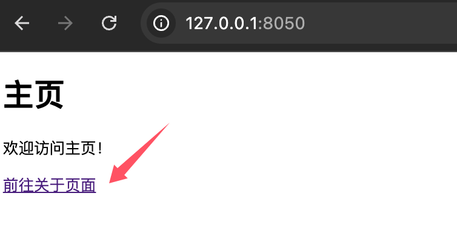
页面布局：
home_layout：主页的布局，包含标题、描述和一个指向关于页面的链接。
about_layout：关于页面的布局，包含标题、描述和一个指向主页的链接。
not_found_layout：404 页面的布局，用于处理不存在的路径。
dcc.Location：
id='url'：用于跟踪当前页面的 URL。
refresh=False：禁用页面刷新，实现单页面应用（SPA）的效果。
dcc.Link：
用于创建页面导航链接，href 属性指定目标页面的路径。
回调函数：
根据 pathname 的值动态返回对应的页面布局。
如果路径是 /，返回 home_layout。
如果路径是 /about，返回 about_layout。
如果路径不匹配，返回 not_found_layout。
对于更复杂的多页面应用，可以结合以下方法优化代码结构：
将每个页面的布局定义在单独的模块中，便于维护和扩展。
创建 pages/home.py：
创建 pages/about.py：
在主应用中导入布局：
from pages.home import layout as home_layout from pages.about import layout as about_layout
通过 dcc.Location 的 search 或 pathname 属性传递 URL 参数，实现更灵活的页面逻辑。
在开发交互式 Web 应用程序时，Dash 不仅允许你使用 Python 来构建复杂的应用程序，还提供了丰富的样式设计选项，使你的应用程序看起来更加专业和美观。
在 Dash 中，样式设计是通过 CSS 实现的。Dash 提供了多种方式来设置组件的样式，包括：
内联样式：通过 style 属性直接设置组件的样式。
外部 CSS 文件：通过加载外部 CSS 文件设置全局样式。
Dash Bootstrap Components：使用 Bootstrap 风格的组件和样式。
Dash DAQ：用于创建数据采集和控制应用的样式组件。
通过 style 属性可以直接为组件设置 CSS 样式。style 是一个字典，键是 CSS 属性，值是 CSS 值。
运行效果：
背景颜色为浅蓝色，内边距为 20px，圆角为 10px，文字居中。
标题文字颜色为深蓝色。
通过加载外部 CSS 文件，可以为整个应用设置全局样式。
创建一个 CSS 文件（如 assets/styles.css）。
在 Dash 应用中加载 CSS 文件。
CSS 文件示例 (assets/styles.css)：
Dash 使用 css 文件：
运行效果：
应用加载 assets/styles.css 文件中的样式。
h1 标题颜色为深蓝色，居中显示。
Div 背景颜色为浅蓝色，带内边距和圆角。
Dash Bootstrap Components（dash-bootstrap-components）是一个第三方库，提供了 Bootstrap 风格的组件和样式。它可以帮助快速构建美观的 Dash 应用。
pip install dash-bootstrap-components
运行效果：
使用 Bootstrap 主题样式。
标题居中显示，颜色为主题蓝色。
卡片组件带有标题和内容，样式美观。
Dash DAQ 是一个用于创建数据采集和控制应用的组件库，提供了丰富的样式组件。
pip install dash-daq
运行效果：
显示一个温度计和一个压力表，样式美观。
组件居中显示，带外边距。